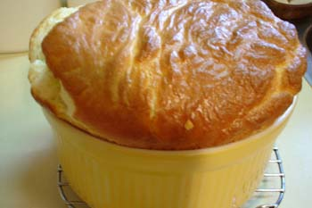

Cheese soufflé
When I was a girl the ability to make a successful soufflé was considered to be a real feather in one’s culinary cap, and was the cause of a great deal of anxiety and hand-wringing amongst us young brides and hippies, even those of us who could cook far more complicated dishes without turning a hair. I was given a set of soufflé dishes, in graduated sizes, for my first wedding, and hauled them around with me through I don’t know how many moves until they finally broke or I lost track of them sometime in the last decade or so. I replaced the largest one although I wish I would have gotten a darker color as it would have made a more dramatic presentation.
I don’t think what I fully realized all those years ago when I was fretting about the difficulty of it all was that a soufflé is basically nothing more than a thick cheese sauce, enriched with egg yolk (in culinary terms this type of sauce is called a ‘Mornay sauce’), into which you fold the beaten egg whites. We invested a lot more mystery into the whole process than it deserved; the eggs had to be warm, should we wrap a ‘collar’ around the lip of the soufflé dish?, we tiptoed around the kitchen for fear of making the whole thing fall once it was in the oven, etc. And separating the eggs always made me more nervous while I was making this dish than it ever did while I was baking desserts, I guess because of the warnings that if one speck of yolk should get into the whites they wouldn’t whip. My nervousness would often make me clumsy and then my clumsiness would make me crack the eggs awkwardly, sometimes breaking the yolks and causing the very thing I feared. You can’t be fearful and tentative when breaking eggs—give them a sharp rap on the side of the bowl, pour them back and forth between the halves of shell twice, letting the white drain through, and there you have it. And if you should get a bit of shell in the bowl, the best way to retrieve it is to use the sharp edge of the egg shell itself to scoop it out.

I’m not going to bother giving the recipe here; I happened to use the one in From Julia Child’s Kitchen, an older Julia Child cookbook that I haven’t opened for some time. But you can find soufflé recipes in many cookbooks, including The Joy of Cooking and others. They are all basically the same formula. According to Julia, the classic cheese soufflé uses gruyère cheese; I used an extra-sharp Canadian cheddar, which she calls a ‘distinctly American taste’, somewhat disdainfully. It was absolutely delicious, though, with lots of glossy, crisp brown crust on the top, bottom, and sides, which I think is the best part. Make sure you don’t skimp on the buttering and dusting the baking dish with flour because that’s what makes it get all crusty.
I served this with a spinach salad with avocado and mandarin oranges, and a whole-grain baguette. And the soufflé itself was so far from being temperamental, that when I took it out too early and had to put it back in the oven for an additional five minutes or so, it didn’t even fall, but rose a little bit more!
Comments
Looks delicious! I’m sorry I never got to have one growing up. Or did I?
I hear the chefs around school saying that adding a bit of liquid like water helps a soufflé rise even higher!
We had pierogies tonight, and then I made my first chocolate mousse. I didn’t use a recipe or anything, I just guessed my way through it. We now have an incredibly rich and thick chocolate chantilly cream in the fridge, of which we can only tolerate a few bites at a time, it’s so rich.
I used to make them once in awhile when you and Jon were little but you weren’t that fond of them. Calvin didn’t like this one but couldn’t really say why; he likes eggs and cheese omelets.
Why didn’t you use a recipe for the chocolate mousse? Does it have eggs in it or just heavy cream?
Just heavy cream. I don’t know why I didn’t use a recipe. I guess sometimes I look at a recipe and there is something in it that I don’t have, at which point I become flustered and occasionally give up. So occasionally I throw caution to the wind and just guess my way through something, which I realize is foolish with something like mousse, which I had never prepared before. Sometimes, though, I end up with a delicious and unique meal.
How do you eat a souffle in a restaurant – direct from the ramikin? with just a fork..or with a knife as well or with a spoon?
Sorry to sound ignorant.
Thanks
Add a comment